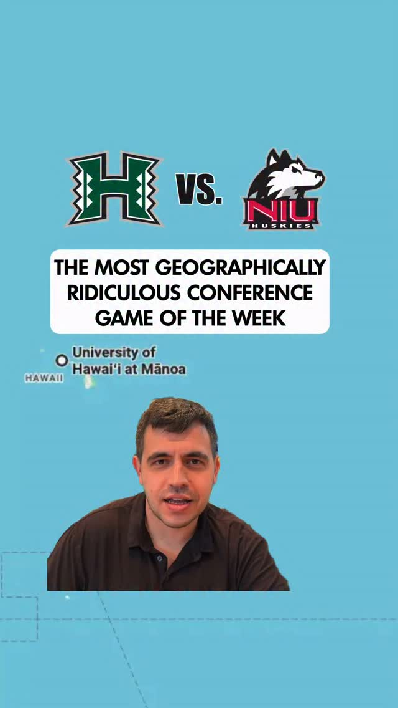

Trump’s war on the people’s golf course
Golf, public space, and who gets to belong.
Independent writer · Podcast host · Video creator
Los Angeles, CASports, and everything
that makes them interesting.
I write about sports, business, technology, and the places they overlap. I also co-host Split Zone Duo and make videos about college football’s very strange world.
Sometimes the story is on the field. Often, it’s somewhere else.

Video & partnerships

Instagram Instagram
Instagram  Instagram
Instagram Selected writing
Reported features, arguments, interviews, and explainers. My work ranges from college football and Formula 1 to artificial intelligence, gambling, and who gets to use a public golf course.
Commission a storyGolf, public space, and who gets to belong.
What happens when a fan base finally gets what it wanted?
The design choices shaping how we understand a new technology.
The changing economics of women’s college sports.
A conversation with the driver who became the voice of a sport.
What the betting markets saw in election denial.
In your headphones
 Independent college football.
Independent college football.Co-founder & co-host
College football is a very big sport. We try to cover all of it: the games, the history, the money, and the people who make it matter.
Richard Johnson and I host an independent, subscriber-supported show for fans who want to understand what’s happening and why.
Interested in reaching listeners, too? Ask about a podcast + social partnership
Get in touch
An occasional email
I promise to be kind to your inbox.